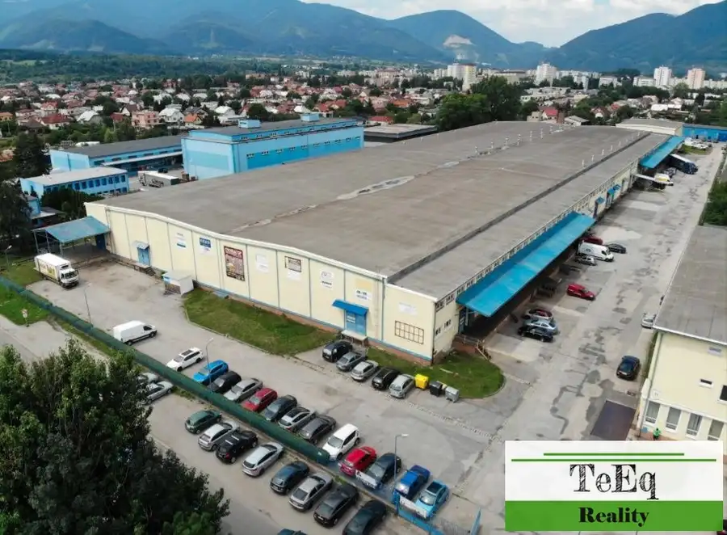
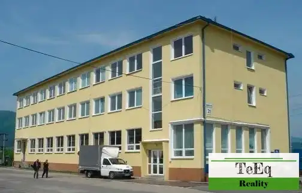
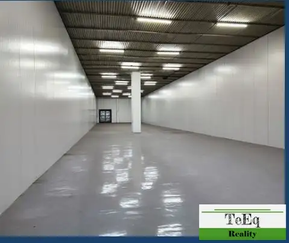
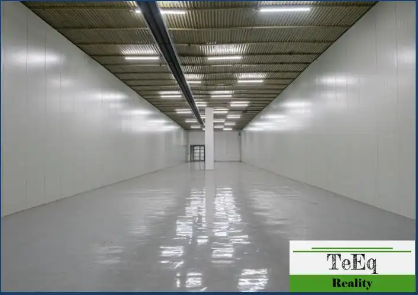
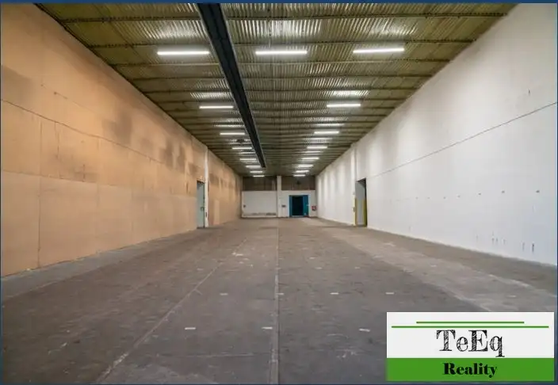
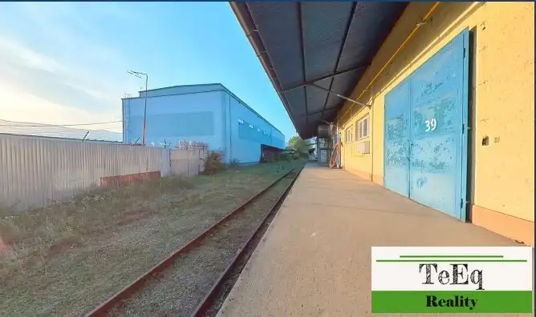

Na prenájom skladový objekt 200 m2 až 17 000 m2 Martin
Martin






- Plocha17000 m²
- StavKompletná rekonštrukcia
O nehnuteľnosti
Ponúkame na prenájom výrobno-skladové priestory v priemyselnom areáli v Martine.V ponuke sú skladové priestory od 200 m2 až po 17 000 m2.Sklady sú v rozlohe: 200 m2, 260 m2, 800 m2, 1200 m2. Rozlohy je možné pospájať do väčších priestorov.K dispozícii sú aj voľné kancelárske priestore v administratívnej budove.Cena nájmu je od 5€ / m2 + dph + energie.Cena nájmu záleží o rozlohy, ktorá sa prenajme.Haly majú vstupné nákladné brány, vysoký strop, nové hladené podlahy, nákladná rampa.V areáli sa nachádza železničná nakládka a nákladná váha.Areál je situovaný v širšom centre mesta Martin v priemyselnej zóne Martin – Priekopa, priamo na hlavnom ťahu Bratislava – Košice, vo vzdialenosti cca 25 km od mesta Žilina. Najbližšie hraničné prechody do Česka a Poľska sú od mesta vzdialené do 70 km. Železničná nakládka (vlastná vlečka) na trase Praha – BA – KE je priamo v areáli.Dopravné napojenie – hlavný ťah 1 km, autobusová stanica a železničná stanica 4 km.V blízkosti je zastávka pre MHD a prímestské spoje.V blízkosti je železničná stanica na trati Vrútky – Zvolen.Vo vzdialenosti 1 km bude výjazd z diaľnice D1 k nášmu areálu. Možnosti využitiaV rámci areálu sú k dispozícii skladové, výrobné aj kancelárske priestory.Areál sídla spoločnosti sa skladá z 3 základných objektov:Sklad priemyselného tovaru – 17 000 m2 použiteľných na: obchodné, resp. výrobné priestory, skladové priestory, kancelárske priestory. Súčasťou objektu sú sociálne a hygienické zariadenia.Administratívna budova je 3 podlažná – 900 m2.Obslužné hospodárstvo tvorí: garáže – 800 m2, kotolňa a transformačná stanica.Objekt je v súčasnosti využívaný viacerými podnikateľskými subjektmi ako skladové, výrobné a kancelárske priestory. Ochrana celého areálu spoločnosti je zabezpečená strážnou službou. V areáli sú k dispozícii parkovacie miesta.V areáli sa nachádza železničná nakládka a nákladná váha.V prípade záujmu o viac informácií, prípadne obhliadku, nás neváhajte kontaktovať: Zuzana Sliacka, 0902 380 897 alebo zuzana.sliacka@teeq.sk
Parametre
- Druh
- Skladový objekt
- Dátum zverejnenia
- 30. 09. 2026
- Elektrina
- Na pozemku - 230 V, Na pozemku - 400 V
- Energetický certifikát budovy
- nie je
- Odpadové vody
- Na pozemku - Kanalizácia
- Plyn
- Na pozemku
- Počet nadzemných podlaží
- 1
- Rok výstavby
- 1990
- Stav nehnuteľnosti
- Kompletná rekonštrukcia
- Typ
- Prenájom
- Typ konštrukcie
- Zmiešaná
- Voda
- Na pozemku - Diaľkový vodovod
- Zastavaná plocha
- 17000 m²
- Úžitková plocha
- 17000 m²
Kde to je


Mohlo by Vás zaujímať
 Komerčné priestoryNové
Cena na vyžádáníNa prenájom sklady pri Zvolene
Hronská Dúbrava
1000 m²
Komerčné priestoryNové
Cena na vyžádáníNa prenájom sklady pri Zvolene
Hronská Dúbrava
1000 m²
 Komerčné priestoryNové
Cena na vyžádáníNa prenájom kancelárie 24 m2 a 24 m2 Banská Bystrica
Banská Bystrica
24 m²
Komerčné priestoryNové
Cena na vyžádáníNa prenájom kancelárie 24 m2 a 24 m2 Banská Bystrica
Banská Bystrica
24 m²
 Komerčné priestoryNové
Cena na vyžádáníNa prenájom samostatný prevádzkový areál Banská Bystrica
Banská Bystrica
1350 m²
Komerčné priestoryNové
Cena na vyžádáníNa prenájom samostatný prevádzkový areál Banská Bystrica
Banská Bystrica
1350 m²